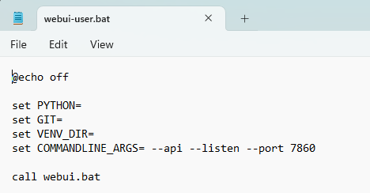

Extras 安装
本页面包含在本地设备上安装 SillyTavern Extras 的说明。
已停止维护
Extras 项目已于 2024 年 4 月停止维护，将不会收到任何新的更新或模块。绝大多数模块已在 SillyTavern 主应用程序中原生提供。您仍可安装和使用它，但如遇到问题，请勿期望能获得即时支持。
在您的操作系统上进行本地安装可能比较困难，甚至无法实现（尤其是 Termux）。
使用官方 Extras Colab
- 设置简单
- 免费使用
- 无需 Colab GPU 额度（使用
use_cpu选项） - 详情请参阅
Colab 指南页面 。
在 Colab 中运行 Extras
- 打开官方 Extras Colab
- 选择所需的"Extra"选项
- 选择
use_cpu以在无需 GPU 额度的情况下运行 Extras- 这会使 Stable Diffusion 运行变慢，但其他功能均可正常运行
- 非必须，但建议：选择
secure选项以生成 API 密钥来保护您的共享实例。 - 单击左侧的开始按钮（看起来像三角形的"播放"按钮）
- 等待所有内容加载完毕
- 在输出底部查找
trycloudflare.com链接。忽略 localhost 链接，它无法使用（我们试过了！）。 - 它将以
Running on文本开头 - 复制该行下方列出的 API URL 链接。（请勿复制 'localhost' URL，请使用另一个）
- 启动带扩展支持的 SillyTavern：（如有必要，在
config.yaml中将enableExtensions设置为true） - 导航到 SillyTavern 的扩展菜单（单击页面顶部的"层叠方块"图标）。
- 将 API URL 粘贴到顶部的框中。（不是 API 密钥框）
- 如果您未启用
secure选项，请确保使用官方 Colab 时 API 密钥框完全为空。 - 如果您已启用
secure选项，请将生成的 API 密钥粘贴到 API 密钥框中。 - API 密钥将出现在 Colab 的控制台输出中，例如：
Your API key is fee2f3f559 - 单击"连接"
本地安装方法
MiniConda（推荐）
此方法之所以推荐，是因为 Conda 为 Extras 的依赖包创建了一个"虚拟环境"，这样它们就不会影响您系统范围内的 Python 安装。
-
安装 Miniconda
（重要！）阅读如何使用 Conda
-
安装 git
（已用 git 安装 SillyTavern 的用户可以跳过此步骤！）
安装好这两者之后……
在
CONDA 命令提示符窗口中逐条输入/粘贴以下命令，每条后按Enter。 -
创建新的 Conda 环境（将其命名为
extras）：conda create -n extras -
激活新环境
conda activate extras（您应该会在命令提示符左侧看到(extras)出现） -
安装所需的系统包（这需要一些时间）
conda install python=3.11 git -
克隆 Extras GitHub 仓库
git clone https://github.com/SillyTavern/SillyTavern-extras -
导航到已克隆的 Extras 仓库
cd SillyTavern-extras -
使用以下某一命令安装 Extras 的依赖（同样需要一些时间）：
pip install -r requirements.txt- 用于基本功能pip install -r requirements-rvc.txt- 用于实时语音克隆pip install -r requirements-coqui.txt- 用于 Coqui TTS（不推荐）
如果在此步骤遇到错误，请参阅
常见问题 页面！ -
参见下方"安装后运行 Extras"
系统全局安装
此方法更简单，但会影响您系统范围内的 Python 安装。
如果您同时使用许多具有不同依赖的 Python 程序，这可能会导致冲突。
如果这是您第一次接触 Python 相关内容，应该不会有问题。
- 安装 Python 3.11：https://www.python.org/downloads/release/python-3115/
- 安装 git：https://git-scm.com/downloads
- 打开命令提示符窗口，进入一个您拥有完整访问权限的文件夹。
- 克隆仓库：
git clone https://github.com/SillyTavern/SillyTavern-extras，按 Enter。 - 克隆完成后，输入
cd SillyTavern-extras，按 Enter。 - 输入
python -m pip install -r requirements.txt - 参见下方"安装后运行 Extras"
安装后运行 Extras
确认已启用扩展
- 用文本编辑器打开
config.yaml文件。该文件位于 ST 的基础安装文件夹中。 - 查找
enableExtensions所在行。 - 确保该行的值为
true，而不是false。
决定要使用哪个模块
（此操作只需进行一次）
- Extras 始终通过 Python 命令行启动。
python server.py是最低限度的命令，但它不会启用任何有用的模块。- 要启用模块，您必须使用
--enable-modules=修饰符，后跟以逗号分隔的模块名称列表
示例：python server.py --enable-modules=caption,summarize,classify
这将启用图像描述、聊天摘要和实时更新的角色表情。
下表描述了每个模块。
- 决定要添加到 Python 命令行的模块。
- 这些将在下一步中用到。
注意：Python 命令的模块列表中绝对不能有空格！
启动 Extras 服务器
在仍位于 Extras 安装文件夹内的命令提示符窗口中……
- 确保您的 Conda 环境已激活（如果您使用了 Conda 安装方法）
- 如果环境未激活，输入
activate extras。 - 输入
python server.py --enable-modules=您,选择的,模块,列表 - Extras 服务器将开始加载。
- 过一会儿，它将在末尾显示一个 URL。本地安装默认为
http://localhost:5100。 - 复制 API URL。
将 SillyTavern 连接到 Extras 服务器
- 启动 SillyTavern 服务器，并在浏览器中查看 SillyTavern 界面。
- 打开扩展面板（通过页面顶部的"层叠方块"图标）
- 将 API URL 粘贴到输入框中。
- 单击"连接"。
要再次运行 Extras，只需激活环境并在命令提示符中运行这些命令即可。
conda activate extras，按 Enter。
python server.py，按 Enter。
请确保使用您的设置所需的 server.py 附加选项（见下文）。
创建 .bat 文件以便快速启动
此操作可选，仅适用于 Windows，但在 MacOS 上也应可以实现类似的操作。
- 查看您的 Windows 桌面
- 右键单击，选择"新建"，然后单击"文本文档"
- 桌面上将出现一个新文件，提示您输入名称。
- 将文件命名为
STExtras.txt - 在文本编辑器中打开新创建的文件。
-
将以下代码粘贴到其中：
cd C:\_your_\_full_\_Extras_\_folder_\_path_\ call conda activate extras python server.py --enable-modules=YOUR,SELECTED,MODULE,LIST,HERE,WITH,NO,SPACES call conda deactivate pause - 将占位符文件夹路径替换为您实际的 Extras 安装文件夹路径。
- 将 Python 命令行替换为您实际的命令行
- 用新名称
STExtras.bat保存文件（在大多数文本编辑器中使用"文件" >> "另存为"）
现在您只需双击此 .bat 文件即可轻松启动 Extras。
如果您想更改模块列表（或 Extras 服务器的任何其他命令行修饰符），只需编辑 .bat 文件中的 Python 命令即可。
Extras 安装常见问题
本节列出了安装 SillyTavern Extras 时遇到的常见问题。
错误：在 Linux 上无法导入"talkinghead"模块
它需要安装一个额外的包，因为由于与 Colab 不兼容，该包不会自动安装。在安装其他依赖后运行此命令：
pip install wxpython
Extras 服务器无法连接到 AUTOMATIC1111 的 Stable Diffusion Web UI
Could not connect to remote SD backend at http://127.0.0.1:7860! Disabling SD module...
确保您用于启动 Stable Diffusion 的 webui-user.bat 文件在 COMMANDLINE_ARGS 变量中包含 --api 命令行选项。
在您的"webui-user.bat"中找到并替换该行：set COMMANDLINE_ARGS=--api

如果 SD Web UI 的 API 模式被禁用，Extras 服务器将无法建立连接，您也将无法生成图像！
还是不行？
确保您按正确顺序启动所有内容，并在继续下一步之前等待每个程序完成加载：
- Stable Diffusion Web UI
- SillyTavern Extras
- SillyTavern
如果 Extras 服务器在之后才加载，它将无法重新连接到 Stable Diffusion API。
安装 ChromaDB 时出现 hnswlib 构建错误
ERROR: Could not build wheels for hnswlib, which is required to install pyproject.toml-based projects
在安装 ChromaDB 模块之前，您必须先执行以下操作之一：
- 安装 Visual C++ 构建工具：https://visualstudio.microsoft.com/visual-cpp-build-tools/
- 使用 conda 安装
hnswlib包：conda install -c conda-forge hnswlib
在 Mac 上安装 Python 依赖时出错
ERROR: No matching distribution found for torch==2.0.0+cu117
Mac 不支持 CUDA，因此 torch 包应在不支持 CUDA 的情况下安装。
改用 requirements-silicon.txt 文件安装依赖。
缺少模块？
- 您必须在 Python 命令行中使用
--enable-modules修饰符指定模块名称列表。 - 请参阅
模块 部分。
API 密钥框是用来做什么的？
- SillyTavern 扩展面板中的 API 密钥框仅在以下情况下使用：
- 在您的 Extras 安装文件夹中创建了一个名为
api_key.txt的文本文件，其中包含您选择的 Extras"密码"。 - 使用
--secure命令行参数启动 Extras。
- 在您的 Extras 安装文件夹中创建了一个名为
- 这使 Extras API 成为"密码锁定"状态，只有在 API 密钥框中拥有该密钥的用户才能访问它。
- 这主要适用于希望公开部署 Extras（Colab 等）的用户。
- 在个人 PC 上为个人使用运行 Extras 的用户不应在 API 密钥框中输入任何内容。
移动端/Android/Termux 怎么办？🤔
- 社区中有一些人成功地通过 Termux 上的 Ubuntu 在手机上运行 Extras。
- 但是，Extras 并非为移动端支持而设计。
- 不会为在 Android 设备上运行 Extras 的用户提供支持。
- 请将您的所有问题直接发送给以下链接中指南的创建者。
❗ 此操作不受支持
https://rentry.org/STAI-Termux#downloading-and-running-tai-extras